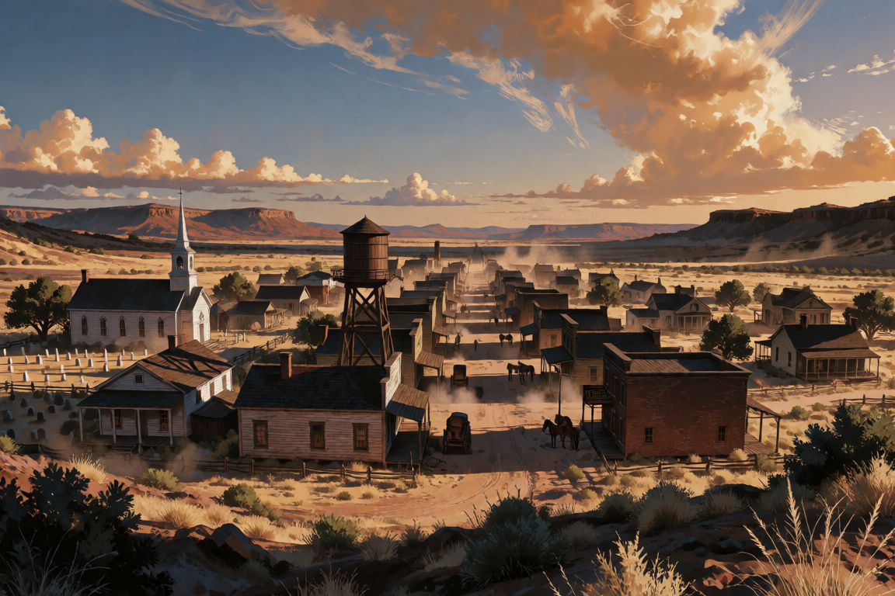
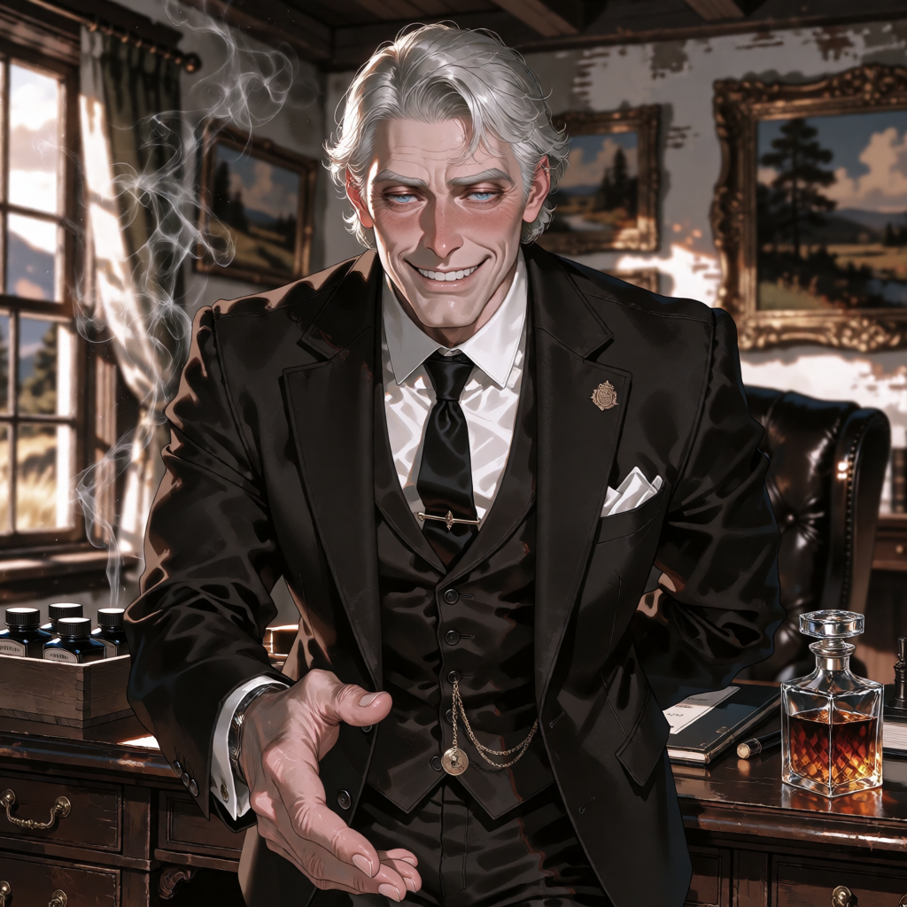

Досье № 12
Городок Холлоу-Крик

312 душ, одна пыльная Main Street и вода, которую делят крестьяне с рельсовыми агентами. До весны здесь было скучно. Потом пришла известь о железной дороге — и земля подскочила в цене, а вместе с ней и человеческая жадность. 4 июня на рассвете у конного корыта перед салуном «Ржавая Шпора» нашли шерифа Томаса Гарнера: один выстрел в спину, двух часов ночи до четырёх. Рядом — гильза ручной перезарядки с обжимом, который носит только один человек в округе. Показания записаны, улики пересчитаны, городок заждался следователя.
Лента событий
Карта городка
Сообщники раскрыты: 0 / 2

?
??? — ЗАКАЗЧИК
Заказчик
Перетащите фото на доску — или коснитесь снимка, затем доски. Коды к фотографиям скрыты в карточке персонажа: узнайте улику — введите её четырёхзначный код.